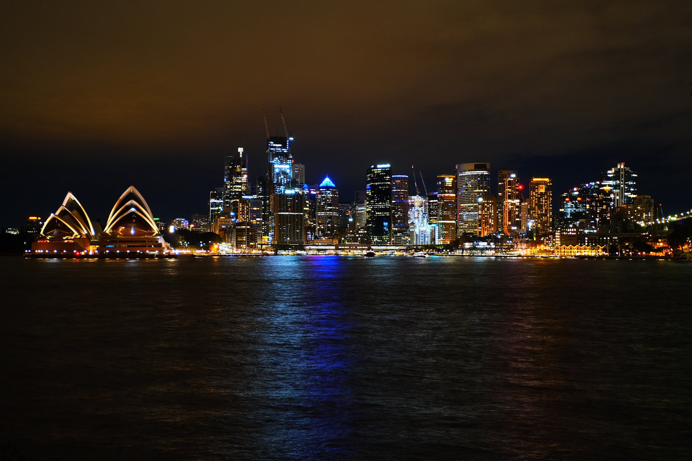

Selected Work
Street, documentary, landscape, architecture and night photography from across Australia.

Documentary, urban and landscape photography focused on atmosphere, geometry, weather and everyday moments.
View portfolio@dylanlearyphotographyStreet, documentary, landscape, architecture and night photography from across Australia.
Dylan Leary is an Australian photographer working across black-and-white documentary photography, street scenes, landscapes, architecture and dramatic weather.
The portfolio is deliberately minimal so the photographs stay at the centre of the experience.
Instagram